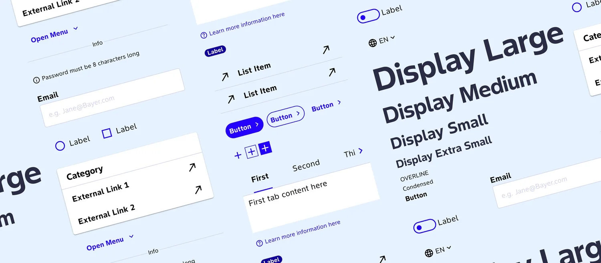

Plate I
uxElle — Next-Generation Design System
2026, in progress. Design system: W3C DTCG tokens, React, Figma MCP.
Commissioned by Bayer, St. Louis.
A ground-up rebuild of Bayer's enterprise design system — replacing a deprecated Material 2 base with a fully custom architecture designed for the AI era. I greenlit this work myself, by writing the internal business case. The existing team maintains the legacy system while I build the successor in parallel.
Materials
React / TypeScript · W3C DTCG · Figma REST API · Code Connect · Figma MCP · Figma Variables → DTCG JSON → CSS themes, fully automated
